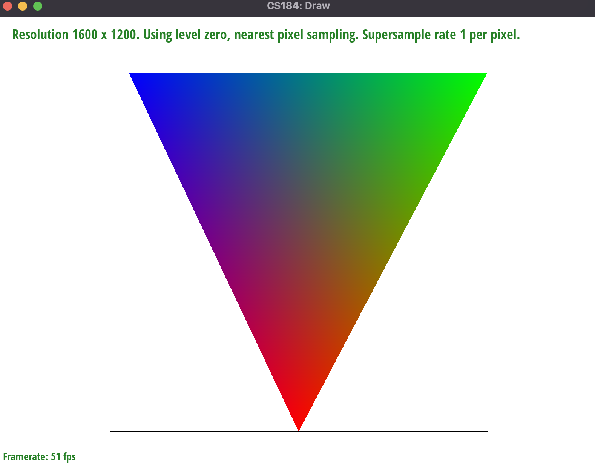
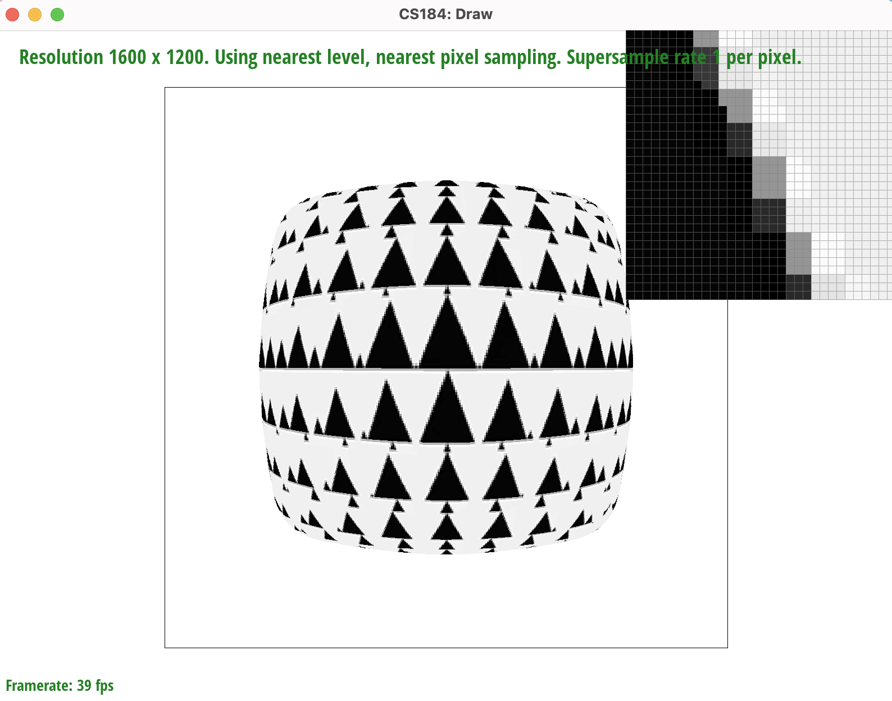
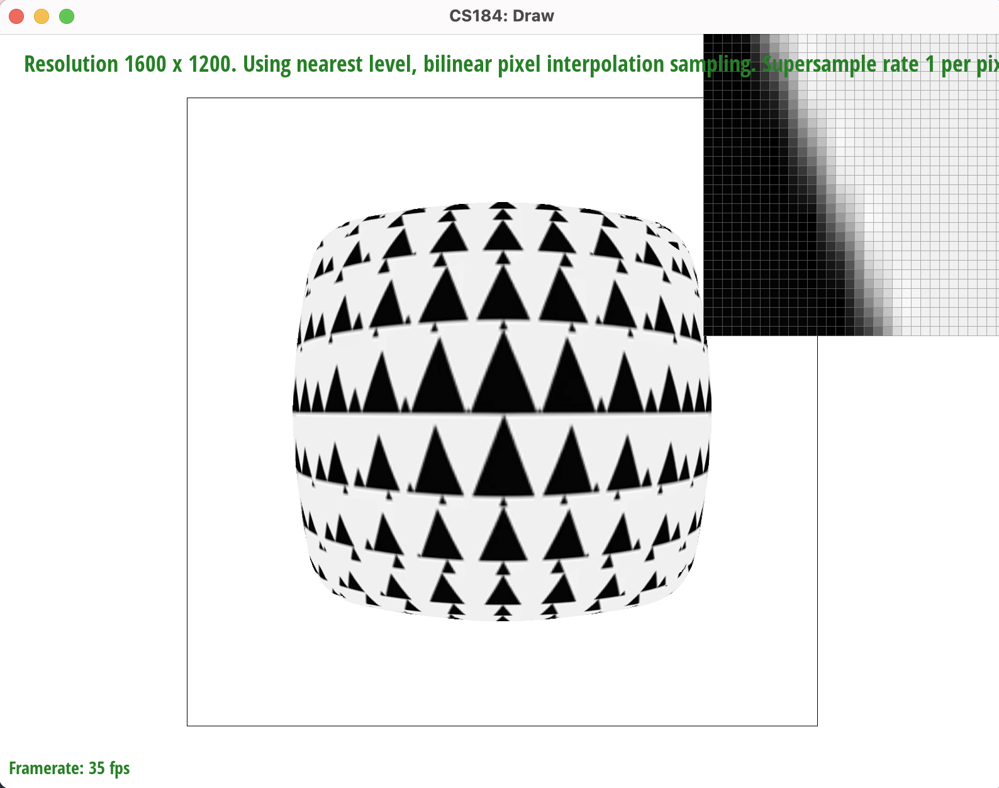

In the project, we've built a rasterizer that supports rasterization, supersampling for anti-aliasing, transformations, various sampling methods for texture mapping (e.g., Barycentric coordinates, pixel sampling, and level sampling). With these features, the rasterizer can take in an SVG file and renders it. We learned and were able to implement many different interesting algorithms learned in class. The best part is that these algorithms are also used in the real world for rendering scenes for movies, video games, and more. It was fascinating seeing how we can anti-alias images, as we always wondered how anti-aliasing settings in games worked. In this project, we were able to see how supersampling could be extremely effective visually, but costly at the same time for the processors. We also were able to see how these algorithms functioned differently in detail, and determine which algorithms worked the best for how much computing resources were needed to actually run it. All in all, the project gave us an insight into what computer graphics can achieve at the lower levels of the graphics pipeline.
In order to implement triangle rasterization, we first find the
bounding box of the triangle by calculating the minimum and maximum
x and y coordinates. After determining the coordinates
of the bounding box, we used a double for loop to iterate over every pixel
in the bounding box, from its minimum x coordinate to its maximum x coordinate and
from its minimum y coordinate to its maximum y coordinate. If the pixel is in bound of
the image (i.e., x is less than width and y is less than height), then we the
Point-in-Triangle test to determine whether the current pixel is in or on the boundary
of our triangle. Additionally, when performing the Point-in-Triangle Test,
we consider two cases for the winding order of the points provided, which can be
either clockwise or counterclockwise. If the pixel is in the triangle or on its boundary,
we call fill_pixel to fill the sample buffer with the correct color.
Our algorithm is no worse than one that checks each sample within the bounding box of the triangle because we calculate the coordinate of the bounding box and only iterate over the pixels in the bounding box. Thus, it is not worse than the algorithm checking each sample in the bounding box.
|
|
sample rate to help us later calculate the middle of each supersampled
pixel (step_size = (float) 1.0 / (2.0 * sqrt(sample_rate))). Then, we use a double for loop to iterate over every single pixel
in the bounding box. For every pixel, we first check if it is within the bound of the image. If so, we use another double for loop to sample
at sqrt(sample_rate) * sqrt(sample_rate) grid locations evenly distributed over the pixel area. Specifically, we increment our
current pixel location by 1 / sqrt(sample_rate) in either x or y direction for each iteration of the for loops, then we add the
step_size we calculated before to find the center of the grid location to sample. Suppose x and y
represents the location we are supersampling at, we fill out the sample_buffer at index (y * width + x) * sample_rate + offset,
where offset counts how many times we have sampled within the current pixel. Then given a filled out sample_buffer vector, we
downsample the sample_buffer by averaging every sample_rate number of elements in the sample_buffer and
stored the result in frame_buffer for rendering. The data structures we used our supersampling algorithm are the sample_buffer
vector and the frame_buffer vector, whose usages are explained above.
Supersampling is useful because it helps remove aliasing, which are jaggies or pixelated edges. Supersampling accomplishes anti-aliasing by
taking more samples inside each pixel then downsampling the result to get an averaged color instead of only sampling at the middle of each pixel.
The resuling image from downsampling has smoother edges, thus removing jaggies. We can clearly see the anti-aliasing effect from supersampling in
the three screenshots below. We can see that as the sample rate increases, we can see more magenta shades at the edges of the triangle,
which smooths out the pixelated edges. We were able to observe these results because we are sampling at more grid locations as the sample_rate
increases, and downsampling them produces different shades of magenta to reduce jaggies.
To summarize, the modifications we made to the rasterization pipeline is that in rasterize_triangle, we take sample_rate number
of samples at each pixel. And instead of directly filling the frame_buffer with sampled color using fill_pixel(), we first fill the
sample_buffer and then downsampling it to frame_buffer.
|
|
|
|
We tried rotating the arms of the robot to make it seem like it was in an interesting pose.
To do this, we rotated both arms and wrists of both sides. The right arm is raised and looks like
the robot is waving, while the left arm is pointing down, making it seem like the robot is in
a pose for a picture. To accomplish this, we added a line in the svg file in each of the arms and wrist/forearm sections
for a rotation. the top bicep part of the arms were both rotated 30 degrees, while the wrists were rotated 50 degrees,
to make it seem like the arms were sort of bent. We also adjusted the translation amounts as well to shift the arms to
correct locations to make the arms seem like they could be in realistic positions and not disconnected completely. The new translations for
the left arm and wrist are translate(-90 -60) & translate(-55, -45), while the new translations for the right arm and wrist are
translate(-90 -20) & translate(55, 45).
|
|
Barycentric Coordinates are, simply put, a method for interpolating values at different vertices. It is useful, however, to understand why we want to do this in the first place. In the real world, objects are rarely one specific color and they rarely transition abruptly to another color; rather, objects in the real world and in graphics have surfaces that have smooth changes of color across their surfaces. This means that the values across vertices vary smoothly throughout the surface (for example, the color in our triangle smoothly varies rather than three different blocks of red, green, and blue). With Barycentric coordinates, we are able to linearly interpolate the values at the three different vertices of our triangles to find the proportions of values we should take from each of the vertices (for example, if a sampled vertex is closer to the blue vertex versus the red, it should be closer to blue). This idea of linearly interpolating the values across vertices, however, can be stretched to not only colors, but positions of the vertices, texture coordinates, material attributes and so on.
|

|
Pixel sampling is a way of determining the values of the pixels of an image using a number of pixels around to rasterize and texturize it.
For this task, we implemented pixel sampling to perform texture mapping by interating over the bounding box of
the triangle and the supersampled location within every pixel to evaluate its corresponding texture coordinates.
Specifically, for every x and y values we iterate over, we calculate the α β, and
γ coefficients to compute the u, v texture coordinates. Then, we pass it into the texture's
sample method, which calls either sample_nearest or sample_bilinear
depending on the PixelSampleMethod variable's value to compute the color for that location.
For this task, we implemented two different pixel sample methods, which are nearest and bilinear. For the nearest
pixel sampling method, we use the u, v texture coordinates and get_texel to find the color of
the nearest texel, which is used to fill in the sampel_buffer for the current location. In sample_nearest,
we first scaled the u, v coordinates by the mip level's width and height, repectively. Then, we round it to
find the coordinates of the nearest texel and clamp it to make sure it doesn't go out of bound. For the bilinear pixel sampling
method, instead of using the color of the nearest texel, we calculated four nearest texels and use lerp() to average
the color of the four texels. We perform lerp() three times, One between the bottom two texels, one between the top two
texels, and lastly using the two results from lerping. We use floor() and ceil() to compute the coordinates
of the four nearest texels, which are (floor(uv.x), floor(uv.y)), (floor(uv.x), ceil(uv.y)),
(ceil(uv.x), floor(uv.y)), and (ceil(uv.x), ceil(uv.y)). When computing the coordinates, we also using clamping
to make sure that they are not out of bound.
From the images below, we can clearly see that bilinear sampling defeats nearest sampling. In the top left image, we see that
nearest sampling results in broken, pixelated grid lines of the map. However, in the top right, we see that bilinear pixel sampling
result in smoother and more connected grid lines. This different is due to the fact that for bilinear, we sample four nearest texels
and take their average by lerp, which can smooth out changes in color and make them less abrupt. With sample_rate
16, we see that its nearest pixel sampling resutl in better rasterization than sample_rate 1 due to supersampling sampling
at more grid locations and downsampling to compute the resulting pixel values. Similar to sample rate 1, the bilinear pixel sampling with
sample rate 16 is better than the one with nearest pixel sampling since the same reasoning applies as above.
|
|
|
|
|
|
Level Sampling is a method of sampling that allows us to anti-alias the image while being much more efficient than supersampling.
This is done through the use of data structures called Mipmaps. Mipmaps are essentially pre-filtered versions of the highest resolution
image we have stored, where each level of the mipmap represents a different level of detail. Each level of the image is also stored
as a lower resolution, with each level decreasing by a factor of 2 (i.e. if full resolution is 128x128, level 1 = 64x64 and so on).
Level sampling will take the values from the level that is necessary (calculated by the formula from lecture), based on the screen-space coordinates of the image
and the (u,v) coordinates in texture space. From this level, we can interpolate values from the pixels stored in that level and store them into the
sample buffer. The main thing to note is that the higher the level of mip maps, the blurrier the image will be
(for example, higher levels from lecture looked very blurred out). So, when sampling an image, we use higher levels to sample parts that are further from the viewing point.
Lower levels (level 0, level 1), will be used for parts of the image closer to the viewer so that it looks sharper. Thus, the aliased parts that were
further out in a full resolution image are anti-aliased and become a lot smoother, while closer parts are rendered at full resolution and are still sharp.
We implemented level sampling by adding onto Task 5. The first thing we did was take care of the if conditions in the Texture::sample function.
We simply added multiple if statements to cover all 6 ways of level sampling along with pixel sampling. The next thing we did was fill out the
Texture::get_level function. Here, we took the difference in the (u,v) coordinates in the horizontal direction and the vertical direction (x,y) respectively.
After this, which gave us the difference vectors we need, we scaled the u coordinates of the difference in X and Y vector by width - 1 of the texture image
and scaled the v coordinates of the X and Y difference vectors by height - 1 of the texture image. With this, we proceeded with the formula from lecture to calculate the level.
We then clamped the level, by checking if it was less than 0 (return 0 as the level) or if it was greater than or equal to the number of levels possible (mipmap.size()), then we return mipmap.size() - 1.
The last step was changing the rasterize_textured_triangle. For task 6, the only updates we need to make in this function was to find the (u,v) coordinates of (x+1,y) & (x,y+1">.
We did this by using Barycentric interpolation (as we did in task 5 for (x,y)) to compute the texture space coordinates, and scaled them by alpha, beta, and gamma for their coordinates. The (u,v) coordinates for each of these were
used as the (x,y) for the dx, dy Vector2D's that we were throwing into get_level. These are the changes, but we can define as the pipeline for task 6 as the following:
We go through each pixel in the image using the same loops as before, determine the coordinates in texture space ((u,v) coordinates) using Barycentric calculations, and fill out our three Vector2D's in our
SampleParams struct with the (u,v) coordinates of (x,y), (x+1, y), and (x, y+1), respectively. We then fill the sample method with the color returned by
Texture::sample. The sample function will simply check which case of pixel sampling and level sampling we must use, and call that respective function using the level found in get_level. Note, that if it is nearest level, we round, and
and for trilinear, we find the Color from level floor(D) and floor(D+1), and interpolate those two using the continuous D value itself. This will return the color needed, and we fill the sample buffer and move on.
As for tradeoffs, mipmapping accomplishes the same goal as supersampling, which anti-aliasing the image, but with higher efficiency. This is because supersampling multiplies the entire image by a specific factor, which increases the number of times we have to actually sample a pixel, throughout the entire image. Mipmapping allows us to speed up the rendering speed by using lower resolution images to sample pixels far from the viewing point. The lower resolution images are downsampled and take less time to look up versus supersampling many more pixels in the image itself. The tradeoff here is that the image may not always look as sharp as supersampling when using mipmaps. Thinking back to lecture, both anti-aliased the image of blue, black grids successfully but trilinear sampling causing the back to become blurry because of the lower resolution samples taken. The tradeoff for efficiency is a slight drop in quality. As for pixel sampling, it is also more efficient than supersampling since we do not sample as many pixels, but it is also not as clear as either one of level sampling or supersampling, since the samples are approximations of the texels around them. In the case of nearest neighbor sampling, the image can even get blocky as well. Bilinear is better, but still not as good of an option as the other two. In regards to memory usage, supersampling increases the size of the sampling buffer by a large amount (although it is a constant), whereas pixel sampling and level sampling don't use more space unless they are coupled with supersampling as well.
|
|
|
|

|

|
Webpage link: https://cal-cs184-student.github.io/sp22-project-webpages-Linda0501/proj1/index.html